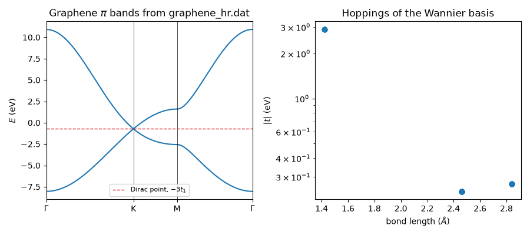

Note
Go to the end to download the full example code.
Maximally Localized Wannier Functions: Graphene from a Wannier90 File#
Marzari and Vanderbilt (1997) showed how to choose the gauge of the Bloch
states so that their Fourier transforms, the Wannier functions
\(|m\mathbf{R}\rangle\), are as localized as possible. In that basis
the first-principles Hamiltonian is a tight-binding model,
\(H_{mn}(\mathbf{R}) = \langle m\mathbf{0}|H|n\mathbf{R}\rangle\),
whose hoppings decay quickly with distance. The Wannier90 code writes it
to seedname_hr.dat, which tbkit.io.read_wannier90() turns into a
KSpace, ready for every band and topology tool:
with \(N_{\mathbf{R}}\) the degeneracy weights of the lattice vectors on the boundary of the Wigner-Seitz supercell.
The files shipped with this example (graphene_hr.dat,
graphene.win, graphene_centres.xyz) are a hand-written stand-in
for a Wannier90 run on graphene’s \(p_z\) bands, in exactly the format
Wannier90 writes: a \(6\times 6\times 1\) k-mesh (43 lattice vectors,
with degeneracy weights 1, 2 and 3), the Wannier centres on the carbon
atoms, and hoppings for the first three neighbour shells close to those of
the maximally-localized-Wannier-function fit of J. Jung and A. H.
MacDonald, Phys. Rev. B 87, 195450 (2013).
import os
import numpy as np
import matplotlib.pyplot as plt
from tbkit.io import read_wannier90, read_hr
from tbkit.kspace import KSpace
try:
HERE = os.path.dirname(os.path.abspath(__file__))
except NameError: # run interactively
HERE = os.getcwd()
HR = os.path.join(HERE, 'graphene_hr.dat')
WIN = os.path.join(HERE, 'graphene.win')
CENTRES = os.path.join(HERE, 'graphene_centres.xyz')
The raw file#
read_hr() returns the lattice vectors, their weights and
the matrices \(H(\mathbf{R})\). The weights obey Wannier90’s sum rule
\(\sum_{\mathbf{R}} 1/N_{\mathbf{R}} = N_k\) (36 k-points).
num_wann = 2, nrpts = 43, weights = [1, 2, 3]
Import as a KSpace model#
dim=2 keeps the layer: the lattice vectors come from the
unit_cell_cart block of the .win file (in Angstrom), the orbital
positions from the Wannier centres.
gra = read_wannier90(HR, win=WIN, centres=CENTRES, tags=['a', 'b'], dim=2)
print('prim_vec:', gra.lat.prim_vec)
print('Wannier centres:', gra.orbital_positions().round(4).tolist())
assert gra.is_hermitian() and gra.dim == 2
prim_vec: [(2.46, 0.0), (1.23, 2.13042249)]
Wannier centres: [[0.0, 0.0], [1.23, 0.7101]]
Localization: the hoppings of a maximally localized basis decay with the bond length \(|\mathbf{R} + \boldsymbol\tau_n - \boldsymbol\tau_m|\); in this file they stop after the third shell (2.84 Angstrom).
bond lengths (Angstrom): [1.4203 2.46 2.8406]
The same model by neighbour order#
The file is graphene with three hopping shells: built by neighbour order on the lattice read from the file, it gives the same \(H(\mathbf{k})\).
Closed-form energies: at \(\Gamma\), \(E_\pm = 6t_1 \pm 3|t_0 + t_2|\); at K the first- and third-neighbour sums vanish, so the Dirac point survives, shifted to \(-3t_1\).
b1, b2 = np.array(gra.rec_vec)
Gamma, K, M = np.zeros(2), (b1 - b2) / 3, b1 / 2
en_G, en_K = gra.get_bands(Gamma)[0], gra.get_bands(K)[0]
print('E(Gamma) = {} eV, E(K) = {} eV'.format(en_G.round(4), en_K.round(4)))
assert np.allclose(en_G, [6*t1 - 3*abs(t0 + t2), 6*t1 + 3*abs(t0 + t2)], atol=1e-12)
assert np.allclose(en_K, -3*t1, atol=1e-12)
E(Gamma) = [-8.04 10.92] eV, E(K) = [-0.72 -0.72] eV
Bands and hopping decay#
dist, en = gra.k_path([Gamma, K, M, Gamma], nk=100)
fig, (ax1, ax2) = plt.subplots(1, 2, figsize=(9, 4))
ax1.plot(dist, en, color='C0')
for x in gra.nodes:
ax1.axvline(x, color='k', lw=0.5)
ax1.axhline(-3*t1, color='C3', ls='--', lw=1, label='Dirac point, $-3t_1$')
ax1.set_xticks(gra.nodes)
ax1.set_xticklabels([r'$\Gamma$', 'K', 'M', r'$\Gamma$'])
ax1.set_xlim(dist[0], dist[-1])
ax1.set_ylabel('$E$ (eV)')
ax1.set_title(r'Graphene $\pi$ bands from graphene_hr.dat')
ax1.legend(fontsize=8)
ax2.semilogy(d, t, 'o')
ax2.set_xlabel(r'bond length ($\AA$)')
ax2.set_ylabel('$|t|$ (eV)')
ax2.set_title('Hoppings of the Wannier basis')
fig.tight_layout()
plt.show()

Total running time of the script: (0 minutes 0.110 seconds)